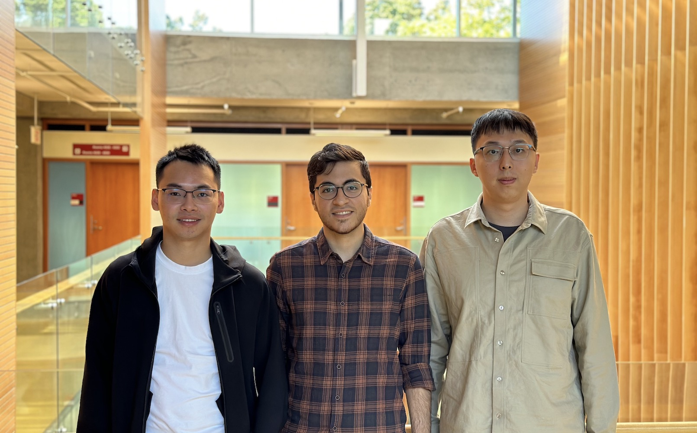

Welcoming Daniel, Amin, and Changyuan!

This week, we welcomed three new graduate students to the CIRRUS Lab: two in the MASc program and one pursuing a PhD. They shared brief bios to introduce themselves:
"I am a graduate student in the Electrical and Computer Engineering department at the University of British Columbia. I obtained my BSc in Software Engineering at the University of Calgary in May 2023. I am interested in all things related to computer and software systems. In particular, I find the growing field of Cloud and Serverless computing especially appealing! I look forward to further develop my knowledge and skills in this exciting field, and aim to build upon the efficiency and practicality of Cloud Systems."
Pin Hong (Daniel) Long
"I am a Master’s student in Electrical and Computer Engineering at UBC. I received my Bachelor’s degree in Computer Engineering from the University of Tehran. I am interested in Cloud Computing because of its wide-ranging applicability across various domains. My goal is to work on designing the next generation of serverless computing systems and enhance their efficiency and performance."
Mohammad Amin Baqershahi
"I am a PhD student in the Department of Electrical and Computer Engineering at The University of British Columbia. I received my Master's degree from the University of Alberta, where I completed my thesis on microservice-based distributed systems. Before joining UBC, I gained academic and industry experience working as a research assistant and a DevOps engineer. This experience allowed me to delve deep into the areas of serverless computing and Kubernetes-based cloud computing platforms. I am deeply intrigued by the endless possibilities of distributed cloud and serverless computing. My objective is to make contributions to the advancement of next-generation serverless computing platforms."
Changyuan Lin
Wishing Daniel, Amin, and Changyuan a successful journey at UBC!
Sep. 8, 2023